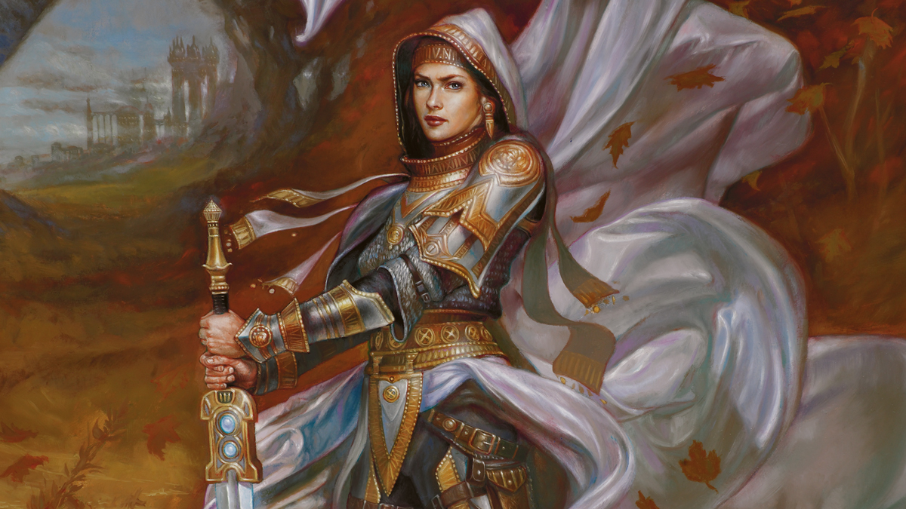

Planeswalker - Elspeth Tirel
|
Nascida em um plano arruinado pela luta e pelas trevas, essa maga branca deixou seu lar assim que sua centelha de Planeswalker se acendeu e nunca mais voltou. Elspeth se especializou na defesa de comunidades e fortalezas, controlando mágicas que constroem e fortalecem poderosos exércitos e os protegem do perigo. O maior desejo de Elspeth é embainhar a espada pela última vez e encontrar um plano que possa ser seu lar. Mas a violência e a destruição são uma presença constante em sua vida, e ela se vê sempre impelida a empunhar sua espada e usar suas magias defensivas para ajudar os que precisam de proteção. |
 |